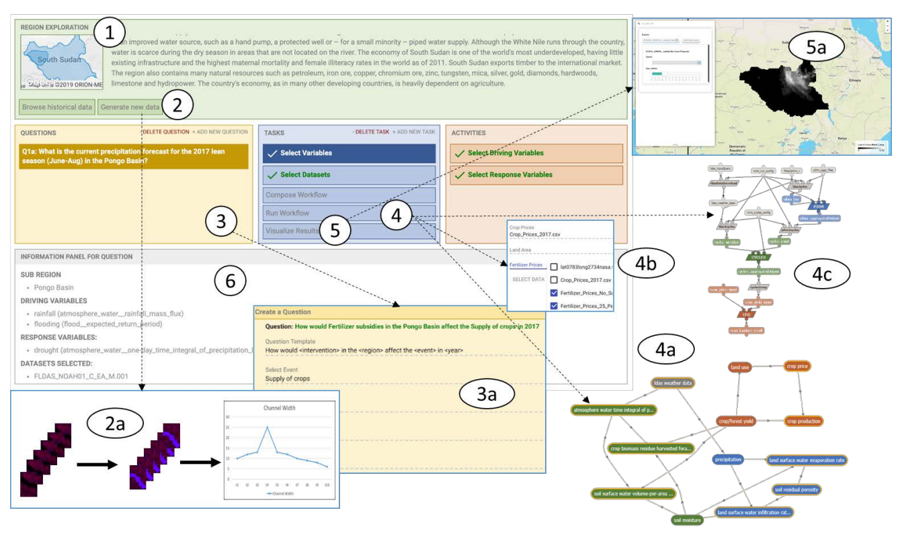

Invertibility aware Integration of Static and Time-series data: An application to Lake Temperature Modeling
Kshitij Tayal, Xiaowei Jia, Rahul Ghosh, Jared Willard, Jordan Read, Vipin Kumar
We proposes a novel machine learning approach called Invertibility-Aware-Long Short-Term Memory for integrating static and time-series data in deep recurrent models to improve predictions of lake temperature. The method is tested on predicting the temperature profile in the Midwestern U.S. and shows improvement in capturing data heterogeneity and outperforms baseline predictions by 12% when static features are unavailable.
SDM 2022 International Conference on Data Mining.[Best Paper Award][paper]

Robust Inverse Framework using Knowledge-guided Self-Supervised Learning: An application to Hydrology
Rahul Ghosh, Arvind Renganathan, Kshitij Tayal, Xiang Li, Ankush Khandelwal, Xiaowei Jia, Christopher Duffy, John Nieber, Vipin Kumar
We propose a novel framework called Knowledge-guided Self-Supervised Learning to extract system characteristic and showcased its applicability to predict streamflow in hydrologic basins, due to the variability of dominant processes and the presence of noise and uncertainty in existing basin characteristics. We outperforms the baseline by 16% in predicting missing characteristics, and 35% improvement in performance over the standard baseline when static characteristics are unknown.
KDD 2022 Conference on Knowledge Discovery and Data Mining.[paper]

Artificial intelligence for modeling complex systems: taming the complexity of expert models to improve decision making
Yolanda Gil et al, Kshitij Tayal, Vipin Kumar
This article proposes a modeling framework that uses artificial intelligence to reduce modeling effort and ensure utility for decision-making for complex systems that have diverse and interacting processes, such as droughts and crop production. This framework includes an intelligent user interface, semantic metadata for models, and semantic representations of data to enable automated data selection and transformations.
ACM Transactions on Interactive Intelligent Systems 2021.[paper]

Phase Retrieval using Single-Instance Deep Generative Prior
Kshitij Tayal, Raunak Manekar, Zhong Zhuang, David Yang, Vipin Kumar, Felix Hofmann, and Ju Sun
Several deep learning methods for phase retrieval exist, but most of them fail on realistic data without precise support information. We propose a novel method based on single-instance deep generative prior that works well on complex-valued crystal data.
OSA Optical Sensors and Sensing Congress 2021.[paper]
Model-agnostic Methods for Text Classification with Inherent Noise
Kshitij Tayal, Rahul Ghosh, Vipin Kumar
Deep neural networks (DNNs) have had success in various natural language tasks. However, DNNs require a lot of high-quality annotations, which can be expensive and time-consuming to collect. This study proposed methods for handling label noise in large scale text classification that can be easily incorporated into existing machine learning workflows. The study compares several noise-robust methods on three datasets and three popular classification models. The study's approach outperforms baselines by up to 10% in classification accuracy and does not require any modifications to the network.
COLING 2020 International Conference on Computational Linguistics (Oral) [paper, code]
Regularized Graph Convolutional Networks for Short Text Classification
Kshitij Tayal , Nikhil Rao, Saurabh Agarwal, Xiaowei Jia, Karthik Subbian, Vipin Kumar
Short text classification is a challenging problem in natural language processing, social network analysis, and e-commerce. Popular deep learning methods are limited in their effectiveness due to the lack of structure in short text sequences. We propose a Graph-regularized Graph Convolution Network (GR-GCN) which incorporates label dependencies in the output space to improve classification results. The proposed model outperforms several baseline methods by up to 6% and is also more robust to noise in textual features.
COLING 2020 International Conference on Computational Linguistics (Oral) [paper]
Unlocking Inverse Problems Using Deep Learning: Breaking Symmetries in Phase Retrieval
Kshitij Tayal, Chieh-Hsin Lai, Raunak Manekar, Zhong Zhuang, Vipin Kumar, Ju Sun
Many physical systems have inputs that generate the same output due to intrinsic symmetries. When trying to invert these systems using end-to-end deep learning methods, it leads to difficulties as the input is mapped to multiple symmetry-related outputs. We propose a solution of breaking the symmetry of the training data and show it to be effective in improving learning performance in real data experiments.
NeurIPS 2020 Workshop on Deep Learning and Inverse Problems [paper]
Inverse Problems, Deep Learning, and Symmetry Breaking
Kshitij Tayal, Chieh-Hsin Lai, Vipin Kumar, Ju Sun
We propose breaking symmetry on training data to improve the learning performance of the generalized phase retrieval problem. We explain the underlying mathematical principle of the proposed solution and state its applicability to other inverse problems. ICML 2020 Workshop on ML Interpretability for Scientific Discovery [paper]

An Intelligent Interface for Integrating Climate, Hydrology, Agriculture, and Socioeconomic Models
Daniel Garojo et al, Kshitij Tayal, Vipin Kumar
We develop framework for model integration that aims to make it easier to understand the interactions between natural processes and human activities. It captures extensive knowledge about models and data and helps users to automatically compose them together, making it faster and more efficient to create valid end-to-end simulations. IUI 2019. [paper]
Sequence Alignment on Directed Graphs
Kavya Vaddadi, Kshitij Tayal, Rajgopal Srinivasan, Naveen Sivadasan
We develop a novel algorithm for aligning sequences on genome variation graphs. It avoids the expensive process and instead uses a dynamic programming formulation for gapped alignment directly on the input graph. The time complexity of the algorithm has linear dependence on the sizes of the sequence, the graph, and its feedback vertex set. Journal of Computational Biology (JCB, 2019) [ RECOMB Best Poster Award 2017 ] [paper]

Cognitive-Biometric Recognition From Language Usage: A Feasibility Study
Neeti Pokhriyal, Kshitij Tayal,Ifeoma Nwogu, Venu Govindaraju
We proposed a novel cognitive biometrics modality based on an individual's written language usage, using internet-scale blogs to create a cognitive fingerprint. The modality is based on the characteristic patterns of how individuals express their thoughts through written language, and it addresses the problems of cognitive authentication and identification. It lays the groundwork for building alternative cognitive systems, as it is easy to obtain, unobtrusive and requires no additional hardware.IEEE Transactions on Information Forensics and Security (TIFS, 2017) [paper]